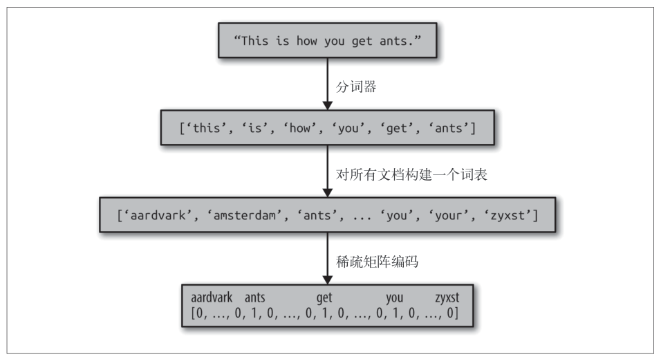
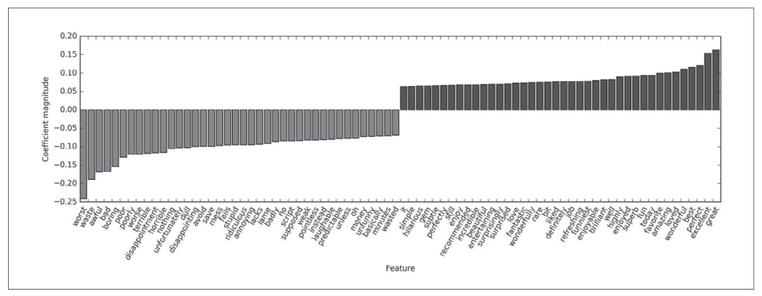
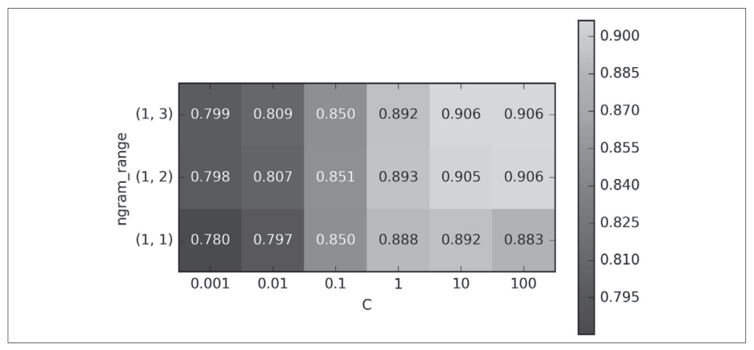
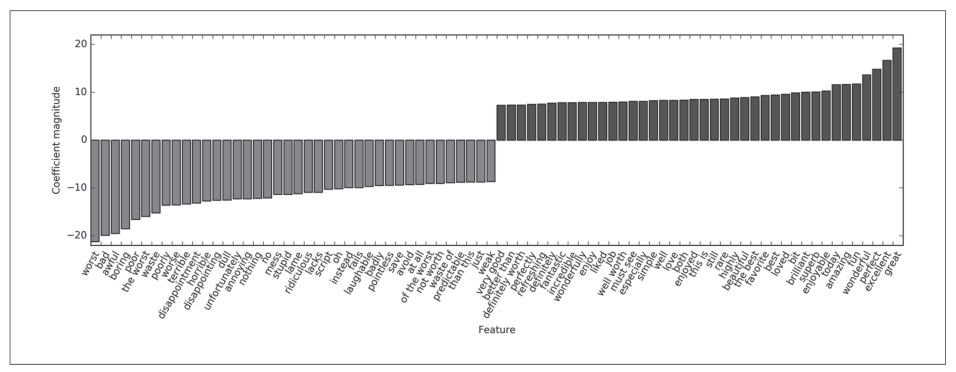
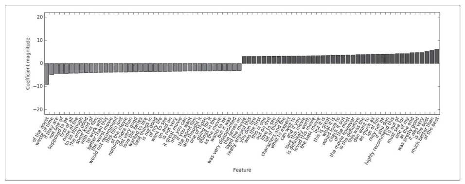
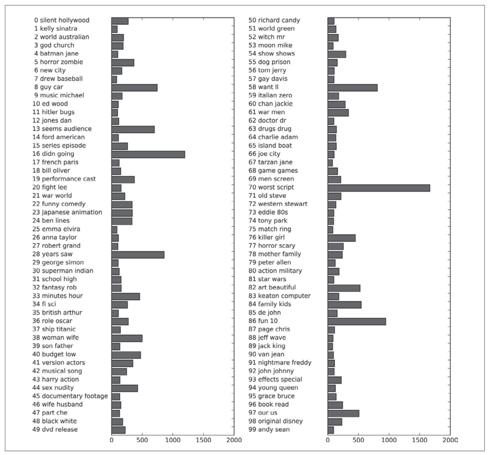

第 7 章 处理文本数据#
本章解决：机器学习的第三种特征——文本怎么喂给模型？核心答案是词袋（bag-of-words）表示及其一整套改进：停用词、tf-idf 缩放、n 元分词、词干提取与词形还原。全书主线在这里收束：第 4 章讲过连续特征与分类特征的"造特征"，本章是它的文本篇；第 6 章的 Pipeline 在 tf-idf 一节正式派上用场；第 3 章的分解方法在 LDA 主题建模中再续前缘。示例应用是 IMDb 电影评论的情感分析（正面 / 负面二分类）。
📓 章代码：nb/ch07.ipynb（分节跟随代码，固定种子实跑输出；旧 API 适配处见代码内“版本适配”注释；IMDb 语料走本机路径（IMDB_DIR））
在前面的章节里，我们讨论过表示数据属性的两种类型的特征：连续特征与分类特征，前者用于描述数量，后者是固定列表中的元素。在许多应用中还可以见到第三种类型的特征：文本。举个例子：
- 判断一封电子邮件是合法邮件还是垃圾邮件——邮件内容一定包含对这个分类任务非常重要的信息；
- 想了解一位政治家对移民问题的看法——这个人的演讲或推文可能提供有用的信息；
- 客户服务中想知道一条消息是投诉还是咨询——可以利用消息的主题和内容自动判断客户的目的，从而将消息发送给相关部门，甚至发送一封全自动回复。
文本数据通常被表示为由字符组成的字符串。在上面给出的所有例子中，文本数据的长度都不相同——这个特征显然与前面讨论过的数值特征有很大不同，我们需要先处理数据，然后才能对其应用机器学习算法。
7.0 本章导图#
7.1 用字符串表示的数据类型#
在深入研究表示机器学习文本数据的处理步骤之前，我们先简要讨论你可能会遇到的不同类型的文本数据。文本通常只是数据集中的字符串，但并非所有的字符串特征都应该被当作文本来处理——第 5 章讨论过，字符串特征有时可以表示分类变量。在查看数据之前，我们无法知道如何处理一个字符串特征。
你可能会遇到四种类型的字符串数据：
- 分类数据；
- 可以在语义上映射为类别的自由字符串；
- 结构化字符串数据；
- 文本数据。
第一类：分类数据（categorical data），来自固定列表。比如你通过调查人们最喜欢的颜色来收集数据，向他们提供了一个下拉菜单，可以从"红色""绿色""蓝色""黄色""黑色""白色""紫色"和"粉色"中选择。这样会得到一个包含 8 个不同取值的数据集，这 8 个不同取值表示的显然是分类变量。你可以通过观察来判断你的数据是不是分类数据（如果你看到了许多不同的字符串，那么不太可能是分类变量），并通过计算数据集中的唯一值并绘制其出现次数的直方图来验证你的判断。你可能还希望检查每个变量是否实际对应于一个在应用中有意义的分类——调查过程进行到一半，有人可能发现调查问卷中将 "black"（黑色）错拼为 "blak"，并随后对其进行了修改。因此，你的数据集中同时包含 "black" 和 "blak"，它们对应于相同的语义，所以应该将二者合并。
第二类：可以在语义上映射为类别的自由字符串（free strings that can be semantically mapped to categories）。想象一下，你向用户提供的不是一个下拉菜单，而是一个文本框，让他们填写自己最喜欢的颜色。许多人的回答可能是像"黑色"或"蓝色"之类的颜色名称。其他人可能会出现笔误，使用不同的单词拼写（比如 "gray" 和 "grey"，两个词的意思都是"灰色"），或使用更加形象的具体名称（比如"午夜蓝色"）。你还会得到一些非常奇怪的条目——xkcd 颜色调查（https://blog.xkcd.com/2010/05/03/color-survey-results/ ）中有一些很好的例子，其中有人为颜色命名，给出了如"迅猛龙泄殖腔"和"我牙医办公室的橙色。我仍然记得他的头皮屑慢慢地漂落到我张开的下巴"之类的名称，很难将这些名称与颜色自动对应（或者根本就无法对应）。
对于这类数据，可能最好将其编码为分类变量：你可以利用最常见的条目来选择类别，也可以自定义类别，使用户回答对应用有意义。比如设置几个标准颜色的类别，可能还有一个"多色"类别（对于像"绿色与红色条纹"之类的回答）和"其他"类别（对于无法归类的回答）。这种字符串预处理过程可能需要大量的人力，并且不容易自动化。如果你能够改变数据的收集方式，我们强烈建议：对于分类变量能够更好表示的概念，不要使用手动输入值。
第三类：结构化字符串数据。通常来说，手动输入值不与固定的类别对应，但仍有一些内在的结构（structure），比如地址、人名或地名、日期、电话号码或其他标识符。这种类型的字符串通常难以解析，其处理方法也强烈依赖于上下文和具体领域。对这种情况的系统处理方法超出了本书的范围。
第四类：自由格式的文本数据（text data），由短语或句子组成。例子包括推文、聊天记录和酒店评论，还包括莎士比亚文集、维基百科的内容或古腾堡计划收集的 50 000 本电子书。所有这些集合包含的信息大多是由单词组成的句子（顺带一提，推文中链接网站的内容所包含的信息可能比推文本身还要多）。为了简单起见，我们假设所有的文档都只使用一种语言：英语。
在文本分析的语境中，有两个来自**信息检索（information retrieval, IR）和自然语言处理（natural language processing, NLP）**社区的术语要记住：
- 语料库（corpus）：数据集——一个文本集合；
- 文档（document）：每个由单个文本表示的数据点。
脚注：其他语言怎么办
原书脚注指出：本章接下来的绝大部分内容也适用于其他使用罗马字母的语言，部分适用于具有单词定界符的其他语言。例如，中文没有词边界，还有其他方面的挑战，所以难以直接应用本章介绍的技术。
拓展：中文读者划重点——本章技术套到中文上要换哪几颗螺丝
原书脚注一句话带过的问题，对中文读者恰恰是最要紧的。英语按空格切分就基本完成分词，而中文的字与字之间没有分隔符，所以流程要改三处：一是分词——需要专门的中文分词器（如 jieba、pkuseg、HanLP），把"处理文本数据"切成"处理 / 文本 / 数据"，切错边界后面全错；二是"词"的粒度——中文也常用字级 n 元分词（把每个汉字当一个词例，再做 2~4 元组合），实现简单、不依赖分词器，效果经常不差， CountVectorizer 配合自定义 tokenizer（或先用 jieba 切好再用空格连接）都能落地；三是停用词——scikit-learn 只内置英语停用词表，中文停用词表（如哈工大、百度停用词表）需要自己准备并传入 stop_words=自定义列表。本章后面讲的词袋、tf-idf、n 元分词、LDA 框架本身与语言无关，换掉"切词"和"停用词"两颗螺丝即可复用。
7.2 示例应用：电影评论的情感分析#
作为本章的一个运行示例，我们将使用由斯坦福研究员 Andrew Maas 收集的 IMDb（Internet Movie Database，互联网电影数据库）电影评论数据集。这个数据集包含评论文本，还有一个标签，用于表示该评论是"正面的"（positive）还是"负面的"（negative）。IMDb 网站本身包含从 1 到 10 的打分。为了简化建模，这些评论打分被归纳为一个二分类数据集：
- 评分大于等于 7 的评论被标记为"正面的"；
- 评分小于等于 4 的评论被标记为"负面的"；
- 中性评论没有包含在数据集中。
我们不讨论这种方法是否是一种好的数据表示，而只是使用 Andrew Maas 提供的数据。
运行环境：数据集需自行下载解压
这个数据集不在 scikit-learn 里，需要自己下载：原书脚注给出的地址是 http://ai.stanford.edu/~amaas/data/sentiment/ （下载 aclImdb_v1.tar.gz，约 80 MB），解压后得到 data/aclImdb/ 目录。本节代码假设工作目录下有 data/aclImdb/train/ 与 data/aclImdb/test/。另外两个来自译注的提醒：一是 v1.0 版数据的目录结构与书中略有不同；二是 v1.0 的训练集中还包含 50 000 个用于无监督学习的无标签文档（unsup 子目录），load_files 会把它们当第三个类别一起读进来——建议在加载前剔除，或直接用 load_files(..., categories=['pos', 'neg']) 只读正负两类。
将数据解压之后，数据集包括两个独立文件夹中的文本文件，一个是训练数据，一个是测试数据。每个文件夹又都有两个子文件夹，一个叫作 pos，一个叫作 neg。在命令行用 tree -L 2 data/aclImdb 可以看到：
pos 文件夹包含所有正面的评论，每条评论都是一个单独的文本文件，neg 文件夹与之类似。scikit-learn 中有一个辅助函数可以加载用这种文件夹结构保存的文件，其中每个子文件夹对应于一个标签，这个函数叫作 load_files。我们首先将 load_files 函数应用于训练数据：
# ===== 书 7.2 节：load_files 加载训练数据 =====
from sklearn.datasets import load_files
reviews_train = load_files("data/aclImdb/train/")
# load_files返回一个Bunch对象，其中包含训练文本和训练标签
text_train, y_train = reviews_train.data, reviews_train.target
print("type of text_train: {}".format(type(text_train)))
print("length of text_train: {}".format(len(text_train)))
print("text_train[1]:\n{}".format(text_train[1]))
type of text_train: <class 'list'>
length of text_train: 25000
text_train[1]:
b'Words can\'t describe how bad this movie is. I can\'t explain it by writing
only. You have too see it for yourself to get at grip of how horrible a movie
really can be. ... every other movie in the world is better than this one.'
（书中打印了这条评论的全文——一部讲飞机的烂片吐槽，此处截断。）可以看到，text_train 是一个长度为 25 000 的列表，其中每个元素是包含一条评论的字符串。你还可以看到，评论中包含一些 HTML 换行符（<br />）。虽然这些符号不太可能对机器学习模型产生很大影响，但最好在继续下一步之前清洗数据并删除这种格式：
侧栏：bytes 还是 str？
text_train的元素类型与你所使用的 Python 版本有关。在 Python 3 中，它们是bytes类型，是表示字符串数据的二进制编码（注意上面输出里字符串开头的b'）；在 Python 2 中，text_train包含的是字符串。原书推荐阅读 Python 2 和 Python 3 文档中关于字符串和 Unicode 的内容（docs.python.org 的 howto/unicode 页面）。不深入讲解不同的字符串类型，但用bytes时清洗也要用bytes字面量（b"<br />"）——两边类型不一致会直接报TypeError。
运行提示：想直接拿到 str
load_files 支持传 encoding="utf-8"：此时 .data 里就是解码好的 str 列表，清洗改写为 doc.replace("<br />", " ") 即可，还能避开编码层面的坑。书中保持默认（不传 encoding）以兼容旧版行为，两种写法都可以。
收集数据集时保持了正类和反类的平衡，这样所有正面字符串和负面字符串的数量相等：
我们用同样的方式加载测试数据集：
# ===== 书 7.2 节：加载测试数据 =====
reviews_test = load_files("data/aclImdb/test/")
text_test, y_test = reviews_test.data, reviews_test.target
print("Number of documents in test data: {}".format(len(text_test)))
print("Samples per class (test): {}".format(np.bincount(y_test)))
text_test = [doc.replace(b"<br />", b" ") for doc in text_test]
我们要解决的任务如下：给定一条评论，根据该评论的文本内容对其分配一个"正面的"或"负面的"标签。这是一项标准的二分类任务。但是，文本数据并不是机器学习模型可以处理的格式——我们需要将文本的字符串表示转换为数值表示，从而可以对其应用机器学习算法。怎么转？这就是下一节的词袋。
7.3 将文本数据表示为词袋#
用于机器学习的文本表示有一种最简单的方法，也是最有效且最常用的方法，就是使用词袋（bag-of-words）表示。使用这种表示方式时，我们舍弃了输入文本中的大部分结构，如章节、段落、句子和格式，只计算语料库中每个单词在每个文本中的出现频次。舍弃结构并仅计算单词出现次数，这会让脑海中出现将文本表示为"袋"的画面。
对于文档语料库，计算词袋表示包括以下三个步骤。
- 分词（tokenization）：将每个文档划分为出现在其中的单词，这些单词称为词例（token），比如按空格和标点划分。
- 构建词表（vocabulary building）：收集一个词表，里面包含出现在任意文档中的所有词，并对它们进行编号（比如按字母顺序排序）。
- 编码（encoding）：对于每个文档，计算词表中每个单词在该文档中的出现频次。

图 7-1 展示了对字符串 "This is how you get ants." 的处理过程。其输出是包含每个文档中单词计数的一个向量：对于词表中的每个单词，我们都有它在每个文档中的出现次数。也就是说，整个数据集中的每个唯一单词都对应于这种数值表示的一个特征。请注意，原始字符串中的单词顺序与词袋特征表示完全无关——"how you get ants" 和 "ants get you how" 在词袋眼里是同一个文档。
7.3.1 将词袋应用于玩具数据集#
词袋表示是在 CountVectorizer 中实现的，它是一个变换器（transformer）。我们首先将它应用于一个包含两个样本的玩具数据集，来看一下它的工作原理：
# ===== 书 7.3.1 节：玩具数据 =====
bards_words = ["The fool doth think he is wise,",
"but the wise man knows himself to be a fool"]
我们导入 CountVectorizer 并将其实例化，然后对玩具数据进行拟合：
# ===== 书 7.3.1 节：实例化并拟合 =====
from sklearn.feature_extraction.text import CountVectorizer
vect = CountVectorizer()
vect.fit(bards_words)
拟合 CountVectorizer 包括训练数据的分词与词表的构建，我们可以通过 vocabulary_ 属性来访问词表：
# ===== 书 7.3.1 节：查看词表 =====
print("Vocabulary size: {}".format(len(vect.vocabulary_)))
print("Vocabulary content:\n {}".format(vect.vocabulary_))
Vocabulary size: 13
Vocabulary content:
{'the': 9, 'himself': 5, 'wise': 12, 'he': 4, 'doth': 2, 'to': 11, 'knows': 7,
'man': 8, 'fool': 3, 'is': 6, 'be': 0, 'think': 10, 'but': 1}
词表共包含 13 个词，从 "be" 到 "wise"（vocabulary_ 是"单词 → 列索引"的字典，编号就是这个词对应的特征列号）。
我们可以调用 transform 方法来创建训练数据的词袋表示：
# ===== 书 7.3.1 节：transform 得到词袋 =====
bag_of_words = vect.transform(bards_words)
print("bag_of_words: {}".format(repr(bag_of_words)))
bag_of_words: <2x13 sparse matrix of type '<class 'numpy.int64'>'
with 16 stored elements in Compressed Sparse Row format>
词袋表示保存在一个 SciPy 稀疏矩阵中，这种数据格式只保存非零元素（参见第 1 章）。这个矩阵的形状为 2×13，每行对应于两个数据点之一，每个特征对应于词表中的一个单词。这里使用稀疏矩阵，是因为大多数文档都只包含词表中的一小部分单词——想想看，与所有英语单词（这是词表的建模对象）相比，一篇电影评论中可能出现多少个不同的单词。保存所有 0 的代价很高，也浪费内存。要想查看稀疏矩阵的实际内容，可以使用 toarray 方法将其转换为"密集的" NumPy 数组（保存所有 0 元素）：
# ===== 书 7.3.1 节：转成密集数组查看 =====
print("Dense representation of bag_of_words:\n{}".format(
bag_of_words.toarray()))
脚注：toarray 只在小玩具上可行
原书脚注 7：之所以能用 toarray 展开，是因为这里只有 13 个单词的小型玩具数据集；对任何真实数据集来说，这将会导致 MemoryError（内存错误）——本章真实数据的词袋是 25000×74849，密集展开要放约 19 亿个元素。
我们可以看到，每个单词的计数都是 0 或 1——bards_words 中的两个字符串都没有包含相同的单词。我们来看一下如何阅读这些特征向量。第一个字符串（"The fool doth think he is wise,"）被表示为第一行：对于词表中的第一个单词 "be"，出现 0 次；对于词表中的第二个单词 "but"，出现 0 次；对于词表中的第三个单词 "doth"，出现 1 次，以此类推。通过观察这两行可以看出，第 4 个单词 "fool"、第 10 个单词 "the" 与第 13 个单词 "wise" 同时出现在两个字符串中。
拓展：'16 stored elements' 是怎么数出来的
稀疏矩阵保存的只是非零元素。第一行有 7 个 1（doth、fool、he、is、the、think、wise），第二行有 9 个 1（be、but、fool、himself、knows、man、the、to、wise），7 + 9 = 16——这就是 with 16 stored elements 的来历。scikit-learn 默认用 CSR（Compressed Sparse Row，压缩稀疏行） 格式：它用三个一维数组记录"哪些列非零（indices）、非零值是多少（data）、每行从哪里开始（indptr）"，取第 \(i\) 行时按 indptr[i] 到 indptr[i+1] 一段直接切出来。对文本数据，词袋矩阵的非零占比通常只有百分之几，CSR 能省一个数量级以上的内存；而且线性模型在这类矩阵上做矩阵向量乘法只碰非零元素，反而比密集数组更快。
7.3.2 将词袋应用于电影评论#
上一节我们详细介绍了词袋处理过程，下面我们将其应用于电影评论情感分析的任务。前面我们将 IMDb 评论的训练数据和测试数据加载为字符串列表（text_train 和 text_test），现在我们来处理它们：
# ===== 书 7.3.2 节：对 25000 条评论建词袋 =====
vect = CountVectorizer().fit(text_train)
X_train = vect.transform(text_train)
print("X_train:\n{}".format(repr(X_train)))
X_train:
<25000x74849 sparse matrix of type '<class 'numpy.int64'>'
with 3431196 stored elements in Compressed Sparse Row format>
X_train 是训练数据的词袋表示，其形状为 25000×74849——词表中包含 74 849 个元素。数据同样被保存为 SciPy 稀疏矩阵：25000 行、74849 列，只有约 343 万个非零元素，非零占比不到 0.2%。我们来更详细地看一下这个词表。访问词表的另一种方法是使用向量器（vectorizer）的 get_feature_names 方法，它将返回一个列表，每个元素对应于一个特征：
# ===== 书 7.3.2 节：浏览词表 =====
feature_names = vect.get_feature_names()
print("Number of features: {}".format(len(feature_names)))
print("First 20 features:\n{}".format(feature_names[:20]))
print("Features 20010 to 20030:\n{}".format(feature_names[20010:20030]))
print("Every 2000th feature:\n{}".format(feature_names[::2000]))
Number of features: 74849
First 20 features:
['00', '000', '0000000000001', '00001', '00015', '000s', '001', '003830',
'006', '007', '0079', '0080', '0083', '0093638', '00am', '00pm', '00s',
'01', '01pm', '02']
Features 20010 to 20030:
['dratted', 'draub', 'draught', 'draughts', 'draughtswoman', 'draw', 'drawback',
'drawbacks', 'drawer', 'drawers', 'drawing', 'drawings', 'drawl',
'drawled', 'drawling', 'drawn', 'draws', 'draza', 'dre', 'drea']
Every 2000th feature:
['00', 'aesir', 'aquarian', 'barking', 'blustering', 'beête', 'chicanery',
'condensing', 'cunning', 'detox', 'draper', 'enshrined', 'favorit', 'freezer',
'goldman', 'hasan', 'huitieme', 'intelligible', 'kantrowitz', 'lawful',
'maars', 'megalunged', 'mostey', 'norrland', 'padilla', 'pincher',
'promisingly', 'receptionist', 'rivals', 'schnaas', 'shunning', 'sparse',
'subset', 'temptations', 'treatises', 'unproven', 'walkman', 'xylophonist']
版本差异：get_feature_names 已改名 get_feature_names_out
书中（scikit-learn 0.19 时代）的 vect.get_feature_names() 在 scikit-learn 1.0 起更名为 get_feature_names_out()，旧名已移除——1.x 下调用会报 AttributeError。新方法直接返回 NumPy 数组（旧版返回 list），所以后文 np.array(vectorizer.get_feature_names()) 这类包装在新版可以省掉，但保留也不出错。本笔记代码保持原书写法，复跑时自行替换方法名即可（本书 4.3 节已遇到过同一处改名）。
如你所见，词表的前 10 个元素都是数字，这可能有些出人意料。所有这些数字都出现在评论中的某处，因此被提取为单词。大部分数字都没有一目了然的语义，除了 "007"——在电影的特定语境中它可能指的是詹姆斯·邦德（James Bond）这个角色（原书脚注 8：对数据的快速分析可以证实这一点，你可以自己尝试验证）。从无意义的"单词"中挑出有意义的有时很困难。
进一步观察这个词表，我们发现许多以 "dra" 开头的英语单词。你可能注意到了，对于 "draught"、"drawback" 和 "drawer"，其单数和复数形式都包含在词表中，并且作为不同的单词。这些单词具有密切相关的语义，将它们作为不同的单词进行计数（对应于不同的特征）可能不太合适——这个问题的解决思路留到 7.8 节（词干提取与词形还原）。
在尝试改进特征提取之前，我们先通过实际构建一个分类器来得到性能的量化度量。我们将训练标签保存在 y_train 中，训练数据的词袋表示保存在 X_train 中，因此我们可以在这个数据上训练一个分类器。对于这样的高维稀疏数据，类似 LogisticRegression 的线性模型通常效果最好。我们首先使用交叉验证对 LogisticRegression 进行评估：
# ===== 书 7.3.2 节：交叉验证评估 =====
from sklearn.model_selection import cross_val_score
from sklearn.linear_model import LogisticRegression
scores = cross_val_score(LogisticRegression(), X_train, y_train, cv=5)
print("Mean cross-validation accuracy: {:.2f}".format(np.mean(scores)))
我们得到的交叉验证平均分数是 88%，这对于平衡的二分类任务来说是一个合理的性能。我们知道，LogisticRegression 有一个正则化参数 \(C\)，我们可以通过交叉验证来调节它：
# ===== 书 7.3.2 节：网格搜索调 C =====
from sklearn.model_selection import GridSearchCV
param_grid = {'C': [0.001, 0.01, 0.1, 1, 10]}
grid = GridSearchCV(LogisticRegression(), param_grid, cv=5)
grid.fit(X_train, y_train)
print("Best cross-validation score: {:.2f}".format(grid.best_score_))
print("Best parameters: ", grid.best_params_)
我们使用 \(C=0.1\) 得到的交叉验证分数是 89%。现在，我们可以在测试集上评估这个参数设置的泛化性能：
# ===== 书 7.3.2 节：测试集评估 =====
X_test = vect.transform(text_test)
print("{:.2f}".format(grid.score(X_test, y_test)))
版本差异：LogisticRegression 的默认求解器变了
原书跑在 scikit-learn 0.19 上，LogisticRegression 的默认 solver 是 liblinear；scikit-learn 0.22 起默认改为 lbfgs。在 74849 维稀疏特征 + 25000 样本的规模上，lbfgs 默认 max_iter=100 往往收敛不够，你会看到 ConvergenceWarning，精度也可能与书印的 0.88/0.89 差零点几个百分点。想贴近书印结果，写 LogisticRegression(solver="liblinear") 即可；想用新默认值，记得加 max_iter=1000。方法论不受影响。
脚注：这里怎么"违规"了交叉验证与预处理？
原书脚注 9 值得细读：细心的读者可能注意到，先 CountVectorizer().fit(text_train) 再做交叉验证，违背了第 6 章"预处理也要放进交叉验证"的原则。但 CountVectorizer 的默认设置实际上不会收集任何统计信息（默认 min_df=1、不做停用词过滤，词表就是"训练折里出现过的所有词"），所以这里的结果是有效的。即便如此，对于应用而言，从一开始就使用 Pipeline 是更好的选择——后面 7.5 节 tf-idf 真的会利用训练集统计信息，就必须用管道了。
下面我们来看一下能否改进单词提取。CountVectorizer 使用正则表达式提取词例。默认使用的正则表达式是 "\b\w\w+\b"。如果你不熟悉正则表达式，它的含义是：找到所有包含至少两个字母或数字（\w）且被词边界（\b）分隔的字符序列。它不会匹配只有一个字母的单词（所以 "a" 不算词例），还会将类似 "doesn't" 或 "bit.ly" 之类的缩写分开，但它会将 "h8ter" 匹配为一个单词。然后，CountVectorizer 将所有单词转换为小写字母，这样 "soon"、"Soon" 和 "sOon" 都对应于同一个词例（因此也对应于同一个特征）。这一简单机制在实践中的效果很好，但正如前面所见，我们得到了许多不包含信息量的特征（比如数字）。减少这种特征的一种方法是，仅使用至少在 2 个文档（或者至少 5 个，等等）中出现过的词例——仅在一个文档中出现的词例不太可能出现在测试集中，因此没什么用。我们可以用 min_df 参数来设置词例至少需要在多少个文档中出现过：
# ===== 书 7.3.2 节：min_df=5 过滤生僻词 =====
vect = CountVectorizer(min_df=5).fit(text_train)
X_train = vect.transform(text_train)
print("X_train with min_df: {}".format(repr(X_train)))
X_train with min_df: <25000x27271 sparse matrix of type '<class 'numpy.int64'>'
with 3354014 stored elements in Compressed Sparse Row format>
通过要求每个词例至少在 5 个文档中出现过，我们可以将特征数量减少到 27 271 个——只有原始特征的三分之一左右。我们再来查看一些词例：
# ===== 书 7.3.2 节：再看词表 =====
feature_names = vect.get_feature_names()
print("First 50 features:\n{}".format(feature_names[:50]))
print("Features 20010 to 20030:\n{}".format(feature_names[20010:20030]))
print("Every 700th feature:\n{}".format(feature_names[::700]))
First 50 features:
['00', '000', '007', '00s', '01', '02', '03', '04', '05', '06', '07', '08',
'09', '10', '100', '1000', '100th', '101', '102', '103', '104', '105', '107',
'108', '10s', '10th', '11', '110', '112', '116', '117', '11th', '12', '120',
'12th', '13', '135', '13th', '14', '140', '14th', '15', '150', '15th', '16',
'160', '1600', '16mm', '16s', '16th']
Features 20010 to 20030:
['repentance', 'repercussions', 'repertoire', 'repetition', 'repetitions',
'repetitious', 'repetitive', 'rephrase', 'replace', 'replaced', 'replacement',
'replaces', 'replacing', 'replay', 'replayable', 'replayed', 'replaying',
'replays', 'replete', 'replica']
Every 700th feature:
['00', 'affections', 'appropriately', 'barbra', 'blurbs', 'butchered',
'cheese', 'commitment', 'courts', 'deconstructed', 'disgraceful', 'dvds',
'eschews', 'fell', 'freezer', 'goriest', 'hauser', 'hungary', 'insinuate',
'juggle', 'leering', 'maelstrom', 'messiah', 'music', 'occasional', 'parking',
'pleasantville', 'pronunciation', 'recipient', 'reviews', 'sas', 'shea',
'sneers', 'steiger', 'swastika', 'thrusting', 'tvs', 'vampyre', 'westerns']
数字的个数明显变少了，有些生僻词或拼写错误似乎也都消失了。我们再次运行网格搜索来看一下模型的性能如何：
# ===== 书 7.3.2 节：min_df=5 后再调 C =====
grid = GridSearchCV(LogisticRegression(), param_grid, cv=5)
grid.fit(X_train, y_train)
print("Best cross-validation score: {:.2f}".format(grid.best_score_))
网格搜索的最佳验证精度还是 89%，这和前面一样。我们并没有改进模型，但减少要处理的特征数量可以加速处理过程，舍弃无用的特征也可能提高模型的可解释性。
侧栏：词表外的单词 如果一个文档中包含训练数据中没有包含的单词，并对其调用 CountVectorizer 的
transform方法，那么这些单词将被忽略，因为它们没有包含在词表中。这对分类来说不是一个问题，因为从不在训练数据中的单词中学不到任何内容。但对于某些应用而言（比如垃圾邮件检测），添加一个特征来表示特定文档中有多少个所谓"词表外"单词可能会有所帮助。为了实现这一点，你需要设置min_df，否则这个特征在训练期间永远不会被用到。
拓展：min_df 的单位是"文档"，不是"次数"，而且可以传比例
两个容易混淆的点。第一，min_df=5 的意思是"至少出现在 5 个不同文档中"（document frequency，文档频数），不是"总共出现 5 次"——一个词在一篇评论里刷 100 遍，只要只出现在这一篇里，照样被 min_df=5 过滤掉。第二，min_df 传浮点数时按比例解释（如 min_df=0.01 表示至少出现在 1% 的文档中）；配套的 max_df 同理，可以传整数或比例（max_df=0.5 表示舍弃出现在一半以上文档中的词，7.4 节的练习会用到）。还有一个纪律要再强调一遍：词表只能在训练集上建。对测试集/新数据只能 transform——它们中出现的新词会被忽略（见上面侧栏），而对测试集 fit 则是数据泄漏，等同于把"考试题"混进了"复习资料"，这一点与第 3 章缩放器、第 6 章管道是同一条铁律。
7.4 停用词#
删除没有信息量的单词还有另一种方法，就是舍弃那些出现次数太多以至于没有信息量的单词。有两种主要方法：使用特定语言的**停用词（stopword）**列表，或者舍弃那些出现过于频繁的单词（用 max_df，作为本章末尾的练习）。
scikit-learn 的 feature_extraction.text 模块中提供了英语停用词的内置列表：
# ===== 书 7.4 节：内置英语停用词 =====
from sklearn.feature_extraction.text import ENGLISH_STOP_WORDS
print("Number of stop words: {}".format(len(ENGLISH_STOP_WORDS)))
print("Every 10th stopword:\n{}".format(list(ENGLISH_STOP_WORDS)[::10]))
Number of stop words: 318
Every 10th stopword:
['above', 'elsewhere', 'into', 'well', 'rather', 'fifteen', 'had', 'enough',
'herein', 'should', 'third', 'although', 'more', 'this', 'none', 'seemed',
'nobody', 'seems', 'he', 'also', 'fill', 'anyone', 'anything', 'me', 'the',
'yet', 'go', 'seeming', 'front', 'beforehand', 'forty', 'i']
显然，删除上述列表中的停用词只能使特征数量减少 318 个（即上述列表的长度），但可能会提高性能。我们来试一下：
# ===== 书 7.4 节：使用内置停用词 =====
# 指定stop_words="english"将使用内置列表。
# 我们也可以扩展这个列表并传入我们自己的列表。
vect = CountVectorizer(min_df=5, stop_words="english").fit(text_train)
X_train = vect.transform(text_train)
print("X_train with stop words:\n{}".format(repr(X_train)))
X_train with stop words:
<25000x26966 sparse matrix of type '<class 'numpy.int64'>'
with 2149958 stored elements in Compressed Sparse Row format>
现在数据集中的特征数量减少了 305 个（27271 − 26966），说明大部分停用词（但不是所有）都出现了。我们再次运行网格搜索：
# ===== 书 7.4 节：停用词后再调 C =====
grid = GridSearchCV(LogisticRegression(), param_grid, cv=5)
grid.fit(X_train, y_train)
print("Best cross-validation score: {:.2f}".format(grid.best_score_))
使用停用词后的网格搜索性能略有下降——不至于担心，但鉴于从 27 000 多个特征中删除 305 个不太可能对性能或可解释性造成很大影响，所以使用这个列表似乎是不值得的。固定的列表主要对小型数据集很有帮助，这些数据集可能没有包含足够的信息，模型从数据本身无法判断出哪些单词是停用词。作为练习，你可以尝试另一种方法，即通过设置 CountVectorizer 的 max_df 选项来舍弃出现最频繁的单词，并查看它对特征数量和性能有什么影响。
拓展：为什么 318 个停用词在这里"白删"了
本数据集上有两个原因让停用词"不划算"。其一，特征空间里那 305 个词本来就不孤单——L2 正则化的线性模型会自动把信息量小的词的系数压小，"the" 这种词哪怕留着，也掀不起风浪；其二，删掉的恰恰是最高频的词，注意对比两步输出的非零元素个数：min_df=5 时是 3 354 014，加停用词后掉到 2 149 958——删 305 个特征干掉了约 120 万个非零项，说明这些词几乎出现在每条评论里，它们承载的"上下文黏合"信息（如 "not good" 里的 not，虽然 not 本身没进 sklearn 的停用词表）并非全无用处，删多了偶尔伤精度。停用词真正的主场是信息检索和小数据集：前者要省空间省时间，后者数据不足以让正则化自己分辨哪些词没用。另外记住：sklearn 只内置了英语表，做中文任务要自己维护停用词列表（可从 stop_words 参数传入自定义列表）。
7.5 用 tf-idf 缩放数据#
另一种方法是按照我们预计的特征信息量大小来缩放特征，而不是舍弃那些认为不重要的特征。最常见的一种做法就是使用词频-逆向文档频率（term frequency–inverse document frequency, tf-idf）方法。这一方法对在某个特定文档中经常出现的术语给予很高的权重，但对在语料库的许多文档中都经常出现的术语给予的权重却不高。用一句人话说：一个词"这篇文章里到处都是、别的文章里很少见"，它多半就是这篇文章的主题词；反之，"哪篇文章都有它"的词（the、and）就没有区分度。
scikit-learn 在两个类中实现了 tf-idf 方法：
- TfidfTransformer：接受 CountVectorizer 生成的稀疏矩阵并将其变换；
- TfidfVectorizer：接受文本数据，一步完成词袋特征提取与 tf-idf 变换。
单词 \(w\) 在文档 \(d\) 中的 tf-idf 分数（书印公式，脚注 10：给出公式主要是为了完整性，你在使用 tf-idf 时无需记住它）：
其中 \(N\) 是训练集中的文档数量，\(N_w\) 是训练集中出现单词 \(w\) 的文档数量，\(\text{tf}\)（词频）是单词 \(w\) 在查询文档 \(d\)（你想要变换或编码的文档）中出现的次数。对数里的分式就是"逆向文档频率"：\(N_w\) 越大（词越烂大街），分式越接近 1，log 越接近 0，权重越低。
拓展：公式里的 +1 与 sklearn 参数的对应
两个 +1 都是平滑（smoothing）：分子分母各加 1，保证任何词的 idf 都严格为正（否则"出现在所有文档里的词"会得到 log(1)=0 甚至负权重）。对应 sklearn 里 TfidfVectorizer(smooth_idf=True) 的默认行为，其精确实现是先算 \(\text{idf} = \ln\frac{1+N}{1+N_w} + 1\)，再乘词频 \(\text{tf}\) 得到 tf-idf。书印公式把末尾的 +1 写在了乘法之外，读的时候按 sklearn 语义理解即可——这也是使用 tf-idf 无需记公式的最好例证：拿不准就查 TfidfVectorizer 的四个相关参数 use_idf（是否用 idf）、smooth_idf（是否平滑）、norm（默认 'l2'）、sublinear_tf（是否对 tf 取 log）。
两个类在计算 tf-idf 表示之后都还应用了 L2 范数——换句话说，它们将每个文档的表示缩放到欧几里得范数为 1。利用这种缩放方法，文档长度（单词数量）不会改变向量化表示：长评论和短评论被拉到同一个"单位球面"上比较。
由于 tf-idf 实际上利用了训练数据的统计学属性，所以我们将使用在第 6 章中介绍过的管道，以确保网格搜索的结果有效。这样会得到下列代码：
# ===== 书 7.5 节：tf-idf + 管道 + 网格搜索 =====
from sklearn.feature_extraction.text import TfidfVectorizer
from sklearn.pipeline import make_pipeline
pipe = make_pipeline(TfidfVectorizer(min_df=5),
LogisticRegression())
param_grid = {'logisticregression__C': [0.001, 0.01, 0.1, 1, 10]}
grid = GridSearchCV(pipe, param_grid, cv=5)
grid.fit(text_train, y_train)
print("Best cross-validation score: {:.2f}".format(grid.best_score_))
如你所见，使用 tf-idf 代替仅统计词数对性能有所提高。我们还可以查看 tf-idf 找到的最重要的单词。请记住，tf-idf 缩放的目的是找到能够区分文档的单词，但它完全是一种无监督技术——因此，这里的"重要"不一定与我们感兴趣的"正面评论"和"负面评论"标签相关。首先，我们从管道中提取 TfidfVectorizer：
# ===== 书 7.5 节：找 tf-idf 最高 / 最低的特征 =====
vectorizer = grid.best_estimator_.named_steps["tfidfvectorizer"]
# 变换训练数据集
X_train = vectorizer.transform(text_train)
# 找到数据集中每个特征的最大值
max_value = X_train.max(axis=0).toarray().ravel()
sorted_by_tfidf = max_value.argsort()
# 获取特征名称
feature_names = np.array(vectorizer.get_feature_names())
print("Features with lowest tfidf:\n{}".format(
feature_names[sorted_by_tfidf[:20]]))
print("Features with highest tfidf: \n{}".format(
feature_names[sorted_by_tfidf[-20:]]))
Features with lowest tfidf:
['poignant' 'disagree' 'instantly' 'importantly' 'lacked' 'occurred'
'currently' 'altogether' 'nearby' 'undoubtedly' 'directs' 'fond' 'stinker'
'avoided' 'emphasis' 'commented' 'disappoint' 'realizing' 'downhill'
'inane']
Features with highest tfidf:
['coop' 'homer' 'dillinger' 'hackenstein' 'gadget' 'taker' 'macarthur'
'vargas' 'jesse' 'basket' 'dominick' 'the' 'victor' 'bridget' 'victoria'
'khouri' 'zizek' 'rob' 'timon' 'titanic']
tf-idf 较小的特征要么是在许多文档里都很常用，要么就是很少使用、且仅出现在非常长的文档中（L2 归一化会把长文档里"只出现一次的词"摊得很薄）。有趣的是，许多 tf-idf 较大的特征实际上对应的是特定的演出或电影——这些术语仅出现在这些特定演出或电影的评论中，但往往在这些评论中多次出现。例如 "pokemon"、"smallville" 和 "doodlebops" 是显而易见的，但这里的 "scanners" 实际上指的也是电影标题（《夺命凶灵》）。这些单词不太可能有助于我们的情感分类任务（除非有些电影的评价可能普遍偏正面或偏负面），但肯定包含了关于评论的大量具体信息。
我们还可以找到逆向文档频率较低的单词，即出现次数很多、因此被认为不那么重要的单词。训练集的逆向文档频率值被保存在 idf_ 属性中：
# ===== 书 7.5 节：idf 最低的 100 个词 =====
sorted_by_idf = np.argsort(vectorizer.idf_)
print("Features with lowest idf:\n{}".format(
feature_names[sorted_by_idf[:100]]))
Features with lowest idf:
['the' 'and' 'of' 'to' 'this' 'is' 'it' 'in' 'that' 'but' 'for' 'with'
'was' 'as' 'on' 'movie' 'not' 'have' 'one' 'be' 'film' 'are' 'you' 'all'
'at' 'an' 'by' 'so' 'from' 'like' 'who' 'they' 'there' 'if' 'his' 'out'
'just' 'about' 'he' 'or' 'has' 'what' 'some' 'good' 'can' 'more' 'when'
'time' 'up' 'very' 'even' 'only' 'no' 'would' 'my' 'see' 'really' 'story'
'which' 'well' 'had' 'me' 'than' 'much' 'their' 'get' 'were' 'other'
'been' 'do' 'most' 'don' 'her' 'also' 'into' 'first' 'made' 'how' 'great'
'because' 'will' 'people' 'make' 'way' 'could' 'we' 'bad' 'after' 'any'
'too' 'then' 'them' 'she' 'watch' 'think' 'acting' 'movies' 'seen' 'its'
'him']
正如所料，这些词大多是英语中的停用词，比如 "the" 和 "no"。但有些单词显然是电影评论特有的，比如 "movie"、"film"、"time"、"story" 等。有趣的是，"good"、"great" 和 "bad" 也属于频繁出现的单词，因此根据 tf-idf 度量也属于"不太相关"的单词，尽管我们可能认为这些单词对情感分析任务非常重要。
拓展：'good/bad 悖论'——'区分文档的词'不等于'对分类有用的词'
这是本节最值得咀嚼的现象。tf-idf 的"重要"衡量的是区分文档的能力：good 和 bad 几乎出现在每一条评论里（正评说 good、差评也说 bad），idf 自然很低，被 tf-idf 判为"不相关"。但对情感二分类来说，good 和 bad 恰恰是最有信息量的词之一——它们区分的是类别，而不是文档。两者不矛盾：tf-idf 是无监督的缩放，它根本没看过标签。那为什么 tf-idf 模型的精度反而更高（0.89）？因为缩放同时干了两件事：把"只在个别评论里刷屏的电影名"压低（它们对类别没有贡献）、把每个文档归一到单位长度（消除评论长短的影响），从而给线性模型一个更规整的输入。教训落在实处：解释"哪些词重要"时，看模型系数（7.6 节）；tf-idf 高低只是"区分文档能力"的参考，两套口径别混用。
7.6 研究模型系数#
最后，我们详细看一下 Logistic 回归模型从数据中实际学到的内容。由于特征数量非常多（删除出现次数不多的特征之后还有 27 271 个），所以显然我们不能同时查看所有系数。但是，我们可以查看最大的系数，并查看这些系数对应的单词。我们将使用基于 tf-idf 特征训练的最后一个模型。
下面这张条形图（图 7-2）给出了 Logistic 回归模型中最大的 25 个系数与最小的 25 个系数，其高度表示每个系数的大小：
# ===== 书 7.6 节：可视化模型系数 =====
mglearn.tools.visualize_coefficients(
grid.best_estimator_.named_steps["logisticregression"].coef_,
feature_names, n_top_features=40)
原书笔误：正文写 25 个，代码却是 40
原书正文说图 7-2 给出"最大的 25 个系数与最小的 25 个系数"，但紧随其后的代码 n_top_features=40 实际画的是每侧 40 个、共 80 根条形（mglearn 的 visualize_coefficients 对每个符号各取 n_top_features 个）。数字以代码为准，正文那句按"最大与最小各 40 个"理解。

左侧的负系数属于模型找到的表示负面评论的单词，而右侧的正系数属于模型找到的表示正面评论的单词。大多数单词都是非常直观的：
- 负面："worst"（最差）、"waste"（浪费）、"disappointment"（失望）、"laughable"（可笑）；
- 正面："excellent"（优秀）、"wonderful"（精彩）、"enjoyable"（令人愉悦）、"refreshing"（耳目一新）。
有些词的含义不那么明确，比如 "bit"（一点）、"job"（工作）和 "today"（今天），但它们可能是类似 "good job"（做得不错）和 "best today"（今日最佳）等短语的一部分——单个词没有情感，组合起来才有，这正是下一节 n 元分词的动机。
拓展：为什么线性模型的系数可以直接当"情感词典"读
这不是本章独有的巧合，而是三个条件叠加的结果。第一，特征就是词：每个系数唯一对应一个词，不存在"主成分是 30 个特征的复杂组合"那种解释困难（对比第 3 章 PCA 的系数热图）。第二，L2 正则把"没用"的词压小：27271 个系数里绝大多数被压到接近 0，冒头的自然是有信息量的词；同时 L2 不像 L1 那样把系数压成精确的 0，所以共现的近义词（bad/terrible）可以分摊权重，结果更稳。第三，特征同量纲：tf-idf + L2 归一化让所有特征在同一尺度上，系数大小可以直接比较（对比第 2 章约会数据"不归一化就没法比系数"的问题）。三个条件凑齐，系数的符号就是情感方向、大小就是贡献强度——这是文本任务上线前做"模型内省"（introspection）最便宜的手段，原书在 7.10 小结里还会专门强调这一点。
7.7 多个单词的词袋（n 元分词）#
使用词袋表示的主要缺点之一是完全舍弃了单词顺序。因此，"it's bad, not good at all"（电影很差，一点也不好）和 "it's good, not bad at all"（电影很好，还不错）这两个字符串的词袋表示完全相同，尽管它们的含义相反。将 "not"（不）放在单词前面，这只是上下文很重要的一个例子（可能是一个极端的例子）。
幸运的是，使用词袋表示时有一种获取上下文的方法：不仅考虑单一词例的计数，而且还考虑相邻的两个或三个词例的计数。两个词例被称为二元分词（bigram），三个词例被称为三元分词（trigram），更一般的词例序列被称为 n 元分词（n-gram）。我们可以通过改变 CountVectorizer 或 TfidfVectorizer 的 ngram_range 参数来改变作为特征的词例范围。ngram_range 参数是一个元组，包含要考虑的词例序列的最小长度和最大长度。
下面是在之前用过的玩具数据上的一个示例：
默认情况下，为每个长度最小为 1 且最大为 1 的词例序列（换句话说，刚好 1 个词例）创建一个特征——单个词例也被称为一元分词（unigram）：
# ===== 书 7.7 节：ngram_range=(1, 1) =====
cv = CountVectorizer(ngram_range=(1, 1)).fit(bards_words)
print("Vocabulary size: {}".format(len(cv.vocabulary_)))
print("Vocabulary:\n{}".format(cv.get_feature_names()))
Vocabulary size: 13
Vocabulary:
['be', 'but', 'doth', 'fool', 'he', 'himself', 'is', 'knows', 'man', 'the',
'think', 'to', 'wise']
要想仅查看二元分词（即仅查看由两个相邻词例组成的序列），可以将 ngram_range 设置为 (2, 2)：
# ===== 书 7.7 节：ngram_range=(2, 2) =====
cv = CountVectorizer(ngram_range=(2, 2)).fit(bards_words)
print("Vocabulary size: {}".format(len(cv.vocabulary_)))
print("Vocabulary:\n{}".format(cv.get_feature_names()))
Vocabulary size: 14
Vocabulary:
['be fool', 'but the', 'doth think', 'fool doth', 'he is', 'himself to',
'is wise', 'knows himself', 'man knows', 'the fool', 'the wise',
'think he', 'to be', 'wise man']
使用更长的词例序列通常会得到更多的特征，也会得到更具体的特征。bards_words 的两个短语中没有相同的二元分词：
# ===== 书 7.7 节：二元分词的密集表示 =====
print("Transformed data (dense):\n{}".format(cv.transform(bards_words).toarray()))
（细看词表里出现了 "be fool" 而不是 "be a fool"——因为默认正则 \b\w\w+\b 不匹配单字母的 "a"，7.3.2 节埋下的伏笔在这里生效了。）对于大多数应用而言，最小的词例数量应该是 1，因为单个单词通常包含丰富的含义。在大多数情况下，添加二元分词会有所帮助。添加更长的序列（一直到五元分词）也可能有所帮助，但这会导致特征数量的大大增加，也可能会导致过拟合，因为其中包含许多非常具体的特征。原则上来说，二元分词的数量是一元分词数量的平方，三元分词的数量是一元分词数量的三次方，从而导致非常大的特征空间；在实践中，更高的 n 元分词在数据中的出现次数实际上更少（原因在于英语语言的结构），不过这个数字仍然很大。
下面是在 bards_words 上使用一元分词、二元分词和三元分词的结果：
# ===== 书 7.7 节：ngram_range=(1, 3) =====
cv = CountVectorizer(ngram_range=(1, 3)).fit(bards_words)
print("Vocabulary size: {}".format(len(cv.vocabulary_)))
print("Vocabulary:\n{}".format(cv.get_feature_names()))
Vocabulary size: 39
Vocabulary:
['be', 'be fool', 'but', 'but the', 'but the wise', 'doth', 'doth think',
'doth think he', 'fool', 'fool doth', 'fool doth think', 'he', 'he is',
'he is wise', 'himself', 'himself to', 'himself to be', 'is', 'is wise',
'knows', 'knows himself', 'knows himself to', 'man', 'man knows',
'man knows himself', 'the', 'the fool', 'the fool doth', 'the wise',
'the wise man', 'think', 'think he', 'think he is', 'to', 'to be',
'to be fool', 'wise', 'wise man', 'wise man knows']
两个短句就把词表从 13 个特征膨胀到 39 个——n 元分词的特征生成速度可见一斑。
我们在 IMDb 电影评论数据上尝试使用 TfidfVectorizer，并利用网格搜索找出 n 元分词的最佳设置：
# ===== 书 7.7 节：IMDb 上的 n 元分词网格搜索 =====
pipe = make_pipeline(TfidfVectorizer(min_df=5), LogisticRegression())
# 运行网格搜索需要很长时间，因为网格相对较大，且包含三元分词
param_grid = {"logisticregression__C": [0.001, 0.01, 0.1, 1, 10, 100],
"tfidfvectorizer__ngram_range": [(1, 1), (1, 2), (1, 3)]}
grid = GridSearchCV(pipe, param_grid, cv=5)
grid.fit(text_train, y_train)
print("Best cross-validation score: {:.2f}".format(grid.best_score_))
print("Best parameters:\n{}".format(grid.best_params_))
Best cross-validation score: 0.91
Best parameters:
{'tfidfvectorizer__ngram_range': (1, 3), 'logisticregression__C': 100}
从结果中可以看出，我们添加了二元分词特征与三元分词特征之后，性能提高了一个百分点多一点（0.89 → 0.91）。我们可以将交叉验证精度作为 ngram_range 和 \(C\) 参数的函数并用热图可视化，正如我们在第 5 章中所做的那样（见图 7-3）：
# ===== 书 7.7 节：交叉验证分数热图 =====
# 从网格搜索中提取分数
scores = grid.cv_results_['mean_test_score'].reshape(-1, 3).T
# 热图可视化
heatmap = mglearn.tools.heatmap(
scores, xlabel="C", ylabel="ngram_range", cmap="viridis", fmt="%.3f",
xticklabels=param_grid['logisticregression__C'],
yticklabels=param_grid['tfidfvectorizer__ngram_range'])
plt.colorbar(heatmap)

从热图中读具体数字：\(C \le 0.1\) 时三种 ngram_range 几乎没差别（都在 0.80 上下，模型欠拟合，上下文特征也救不了）；\(C\) 放大后差距拉开——\(C=10\) 时 (1,1) 是 0.892，(1,2) 到 0.905，(1,3) 到 0.906。也就是说，使用二元分词对性能有很大提高，而添加三元分词对精度只有很小贡献。为了更好地理解模型是如何改进的，我们可以将最佳模型的重要系数可视化，其中包含一元分词、二元分词和三元分词（见图 7-4）：
# ===== 书 7.7 节：最佳模型的重要系数 =====
# 提取特征名称与系数
vect = grid.best_estimator_.named_steps['tfidfvectorizer']
feature_names = np.array(vect.get_feature_names())
coef = grid.best_estimator_.named_steps['logisticregression'].coef_
mglearn.tools.visualize_coefficients(coef, feature_names, n_top_features=40)

有几个特别有趣的特征，它们包含单词 "worth"（值得），而这个词本身并没有出现在一元分词模型中："not worth"（不值得）表示负面评论，而 "definitely worth"（绝对值得）和 "well worth"（很值得）表示正面评论。这是上下文影响 "worth" 一词含义的主要示例——词袋丢掉的那个"顺序信息"，被 bigram 捡回来了一部分。
接下来，我们只将三元分词可视化，以进一步深入了解这些特征有用的原因。许多有用的二元分词和三元分词都由常见的单词组成，这些单词本身可能没有什么信息量，比如 "none of the"（没有一个）、"the only good"（唯一好的）、"on and on"（不停地）、"this is one"（这是一部）、"of the most"（最）等短语中的单词。但是，与一元分词特征的重要性相比，这些特征的影响非常有限，正如图 7-5 所示。
# ===== 书 7.7 节：只看三元分词特征 =====
# 找到三元分词特征
mask = np.array([len(feature.split(" ")) for feature in feature_names]) == 3
# 仅将三元分词特征可视化
mglearn.tools.visualize_coefficients(coef.ravel()[mask],
feature_names[mask], n_top_features=40)

拓展：n 元分词是"组合爆炸"，min_df 是它的最佳拍档
玩具数据上 (1,3) 就把 13 个特征变成 39 个，真实语料更夸张：理论上 \(n\) 元组合数量按词表大小的 \(n\) 次方增长，英语的结构虽然让高频 n-gram 远少于理论值，但 25000 条评论的 (1,3) 词表依然轻松突破百万级。实践中 n 元分词几乎总是与 min_df 搭配使用——绝大多数 bigram/trigram 只出现过一两次，min_df=5 能把它们压掉九成以上，既省内存又防过拟合（这也是上面网格搜索敢用 (1,3) 的原因：管道里写了 TfidfVectorizer(min_df=5)）。顺带一提中文场景：字级 2~4 元组合（bigram 起）是中文文本分类的经典配置，效果常常不输分词后的一元词袋，原理与本节的 "not worth" 完全一样——把局部顺序编码进特征。
7.8 高级分词、词干提取与词形还原#
如前所述，CountVectorizer 和 TfidfVectorizer 中的特征提取相对简单，还有更为复杂的方法。在更加复杂的文本处理应用中，通常需要改进的步骤是词袋模型的第一步：分词（tokenization）——这一步骤为特征提取定义了一个单词是如何构成的。
我们前面看到，词表中通常同时包含某些单词的单数形式和复数形式，比如 "drawback" 和 "drawbacks"、"drawer" 和 "drawers"、"drawing" 和 "drawings"。对于词袋模型而言，"drawback" 和 "drawbacks" 的语义非常接近，区分二者只会增加过拟合，并导致模型无法充分利用训练数据。同样我们还发现，词表中包含像 "replace"、"replaced"、"replacement"、"replaces" 和 "replacing" 这样的单词，它们都是动词 "to replace" 的不同动词形式或相关名词。与名词的单复数形式一样，将不同的动词形式及相关单词视为不同的词例，这不利于构建具有良好泛化性能的模型。
这个问题可以通过用词干（word stem）表示每个单词来解决，这一方法涉及找出（或合并，conflate）所有具有相同词干的单词。两种实现路径：
- 如果使用基于规则的启发法来实现（比如删除常见的后缀），那么通常将其称为词干提取（stemming）；
- 如果使用的是由已知单词形式组成的字典（明确的且经过人工验证的系统），并且考虑了单词在句子中的作用，那么这个过程被称为词形还原（lemmatization），单词的标准化形式被称为词元（lemma）。
词干提取和词形还原这两种处理方法都是标准化（normalization）的形式之一——标准化是指尝试提取一个单词的某种标准形式。标准化的另一个有趣的例子是拼写校正，这种方法在实践中很有用，但超出了本书的范围。
为了更好地理解标准化，我们来对比一种词干提取方法（Porter 词干提取器，一种广泛使用的启发法集合，从 nltk 包导入）与 spacy 包中实现的词形还原：
# ===== 书 7.8 节：对比词形还原与词干提取 =====
import spacy
import nltk
# 加载spacy的英语模型
en_nlp = spacy.load('en')
# 将nltk的Porter词干提取器实例化
stemmer = nltk.stem.PorterStemmer()
# 定义一个函数来对比spacy中的词形还原与nltk中的词干提取
def compare_normalization(doc):
# 在spacy中对文档进行分词
doc_spacy = en_nlp(doc)
# 打印出spacy找到的词元
print("Lemmatization:")
print([token.lemma_ for token in doc_spacy])
# 打印出Porter词干提取器找到的词例
print("Stemming:")
print([stemmer.stem(token.norm_.lower()) for token in doc_spacy])
版本差异：spacy 2.0+ 的三处写法变化
原书用的是 2017 年前后的 spacy 1.x，如今 1.x 时代的写法几乎全部失效，复跑需要三处替换：一是模型名——spacy.load('en') 会报错，要先下载并加载具体模型：python -m spacy download en_core_web_sm，然后 spacy.load("en_core_web_sm")（原书译者注提到的 python3 -m spacy download en 命令也已停用）；二是 tokens_from_list 已移除——本节后面自定义分词器里 old_tokenizer.tokens_from_list(...) 在 spacy 2.0 起不存在，可用 spacy.tokens.Doc(en_nlp.vocab, words=regexp.findall(string)) 构造 Doc；三是处理参数——en_nlp(document, entity=False, parse=False) 这两个关键字参数已移除，改用 en_nlp(document, disable=["ner", "parser"])（或新式的 en_nlp.select_pipes）。nltk 的 PorterStemmer 接口至今没变，可以放心用。另外原书译者注 13 提到：spacy 1.7.5 会把 'our'、'i' 等代词全部还原为 -PRON-，新版 spacy 则直接还原为 'we'、'I' 等词元，输出细节与书印会有出入。
我们将用一个句子来比较词形还原与 Porter 词干提取器，以显示二者的一些区别：
# ===== 书 7.8 节：同一个句子的两种标准化 =====
compare_normalization(u"Our meeting today was worse than yesterday, "
"I'm scared of meeting the clients tomorrow.")
Lemmatization:
['our', 'meeting', 'today', 'be', 'bad', 'than', 'yesterday', ',', 'i', 'be',
'scared', 'of', 'meet', 'the', 'client', 'tomorrow', '.']
Stemming:
['our', 'meet', 'today', 'wa', 'wors', 'than', 'yesterday', ',', 'i', "'m",
'scare', 'of', 'meet', 'the', 'client', 'tomorrow', '.']
逐个对比三组关键差异：
- "was" → "wa" vs "be"：词干提取总是局限于将单词简化成词干，因此 "was" 变成了 "wa"（它只是机械地删后缀）；而词形还原可以得到正确的动词基本词形 "be"。同样，词形还原可以将 "worse" 标准化为 "bad"，而词干提取得到的是 "wors"。
- 两处 "meeting" 的命运不同：词干提取把两处 "meeting" 都简化为 "meet"；利用词形还原，第一处 "meeting" 被认为是名词，所以没有变化，而第二处 "meeting" 被认为是动词，所以变为 "meet"——这就是"考虑了单词在句子中的作用"的含义，靠的是词性标注。
- "I'm" 的拆解：词形还原把 "I'm" 处理成 "i" + "be"，词干提取留下 "i" + "'m"——后者没查出这个词典条目。
一般来说，词形还原是一个比词干提取更复杂的过程，但用于机器学习的词例标准化时通常可以给出比词干提取更好的结果。
虽然 scikit-learn 没有实现这两种形式的标准化，但 CountVectorizer 允许使用 tokenizer 参数来指定使用你自己的分词器（一个可调用对象，接受一个字符串并生成一个词例列表）。我们可以使用 spacy 的词形还原创建一个自定义分词器：
# ===== 书 7.8 节：自定义分词器接入 CountVectorizer =====
# 技术细节：我们希望使用由CountVectorizer所使用的基于正则表达式的分词器，
# 并仅使用spacy的词形还原。
# 为此，我们将en_nlp.tokenizer（spacy分词器）替换为基于正则表达式的分词。
import re
# 在CountVectorizer中使用的正则表达式
regexp = re.compile('(?u)\\b\\w\\w+\\b')
# 加载spacy语言模型，并保存旧的分词器
en_nlp = spacy.load('en')
old_tokenizer = en_nlp.tokenizer
# 将分词器替换为前面的正则表达式
en_nlp.tokenizer = lambda string: old_tokenizer.tokens_from_list(
regexp.findall(string))
# 用spacy文档处理管道创建一个自定义分词器
# （现在使用我们自己的分词器）
def custom_tokenizer(document):
doc_spacy = en_nlp(document, entity=False, parse=False)
return [token.lemma_ for token in doc_spacy]
# 利用自定义分词器来定义一个计数向量器
lemma_vect = CountVectorizer(tokenizer=custom_tokenizer, min_df=5)
（这段代码的技术意图：不用 spacy 自己的分词结果，只借用它的词形还原——先把 CountVectorizer 的正则分词结果灌给 spacy，再取 lemma_。这样特征提取的"切词"行为与标准 CountVectorizer 完全一致，唯一的变量是还原，对比才公平。）
我们变换数据并检查词表的大小：
# ===== 书 7.8 节：词形还原后的词表大小 =====
# 利用带词形还原的CountVectorizer对text_train进行变换
X_train_lemma = lemma_vect.fit_transform(text_train)
print("X_train_lemma.shape: {}".format(X_train_lemma.shape))
# 标准的CountVectorizer，以供参考
vect = CountVectorizer(min_df=5).fit(text_train)
X_train = vect.transform(text_train)
print("X_train.shape: {}".format(X_train.shape))
从输出中可以看出，词形还原将特征数量从 27 271 个（标准的 CountVectorizer 处理过程）减少到 21 596 个。词形还原可以被看作是一种正则化，因为它合并了某些特征。因此我们预计，数据集很小时词形还原对性能的提升最大。为了说明词形还原的作用，我们将使用 StratifiedShuffleSplit 做交叉验证，仅使用 1% 的数据作为训练数据，其余数据作为测试数据：
# ===== 书 7.8 节：只用 1% 训练数据对比 =====
# 仅使用1%的数据作为训练集来构建网格搜索
from sklearn.model_selection import StratifiedShuffleSplit
param_grid = {'C': [0.001, 0.01, 0.1, 1, 10]}
cv = StratifiedShuffleSplit(n_splits=5, test_size=0.99,
train_size=0.01, random_state=0)
grid = GridSearchCV(LogisticRegression(), param_grid, cv=cv)
# 利用标准的CountVectorizer进行网格搜索
grid.fit(X_train, y_train)
print("Best cross-validation score "
"(standard CountVectorizer): {:.3f}".format(grid.best_score_))
# 利用词形还原进行网格搜索
grid.fit(X_train_lemma, y_train)
print("Best cross-validation score "
"(lemmatization): {:.3f}".format(grid.best_score_))
Best cross-validation score (standard CountVectorizer): 0.721
Best cross-validation score (lemmatization): 0.731
在这个例子中，词形还原对性能有较小的提高（0.721 → 0.731）。与许多特征提取技术一样，其结果因数据集的不同而不同。词形还原与词干提取有时有助于构建更好的模型（或至少是更简洁的模型），所以我们建议你，在特定任务中努力提升最后一点性能时可以尝试下这些技术。
拓展：stemming vs lemmatization 对照表
| 维度 | 词干提取 stemming | 词形还原 lemmatization |
|---|---|---|
| 原理 | 规则启发法（删常见后缀） | 词典 + 词性标注，查标准形式 |
| 输出 | 词干，可能不是真词（wa、wors） | 词元，一定是真词（be、bad） |
| 上下文 | 不看词性，meeting 一律 → meet | 名词 meeting 保留、动词 meeting → meet |
| 速度 | 快，纯字符串操作 | 慢，要跑统计模型 |
| 依赖 | nltk 即可 | 需要语言模型包 |
| 适用 | 降维优先、追求速度、检索类任务 | 建模优先、追求语义与泛化 |
一个实用的记法：词干提取像"用剪刀剪尾巴"，剪得快但可能剪伤；词形还原像"查字典找原形"，查得慢但准。文本分类里二者的收益通常都不大（本章：+1 个百分点，还是小训练集场景），先用默认分词把流程跑通，最后再回来试它们。
7.9 主题建模与文档聚类#
常用于文本数据的一种特殊技术是主题建模（topic modeling），这是描述"将每个文档分配给一个或多个主题（通常是无监督的）"这一任务的概括性术语。这方面一个很好的例子是新闻数据，它们可以被分为"政治""体育""金融"等主题。
- 如果为每个文档分配一个主题，那么这是一个文档聚类任务，正如第 3 章中所述；
- 如果每个文档可以有多个主题，那么这个任务与第 3 章中的分解方法有关——我们学到的每个成分对应于一个主题，文档表示中的成分系数告诉我们这个文档与该主题的相关性强弱。
通常来说，人们在谈论主题建模时，他们指的是一种叫作**隐含狄利克雷分布（Latent Dirichlet Allocation, LDA）**的特定分解方法。
脚注：两个 LDA，重名了
原书脚注 14：还有另一种机器学习模型通常也简称为 LDA，那就是线性判别分析（Linear Discriminant Analysis），一种线性分类模型。这造成了很多混乱。在本书中，LDA 是指隐含狄利克雷分布。
从直观上来看，LDA 模型试图找出频繁共同出现的单词群组（即主题）。LDA 还要求，每个文档可以被理解为主题子集的"混合"。重要的是要理解：机器学习模型所谓的"主题"可能不是我们通常在日常对话中所说的主题，而是更类似于 PCA 或 NMF（第 3 章讨论过这些内容）所提取的成分——它可能具有语义，也可能没有。即使 LDA"主题"具有语义，它可能也不是我们通常所说的主题。
回到新闻文章的例子：我们可能有许多关于体育、政治和金融的文章，由两位作者所写。在一篇政治文章中，我们预计可能会看到"州长""投票""党派"等词语；而在一篇体育文章中，我们预计可能会看到类似"队伍""得分"和"赛季"之类的词语。这两组词语可能会同时出现，而例如"队伍"和"州长"就不太可能同时出现。但是，这并不是我们预计可能同时出现的唯一的单词群组——这两位记者可能偏爱不同的短语或者选择不同的单词：可能其中一人喜欢使用"划界"（demarcate）这个词，而另一人喜欢使用"两极分化"（polarize）这个词。其他"主题"可能是"记者 A 常用的词语"和"记者 B 常用的词语"，虽然这并不是通常意义上的主题。
我们将 LDA 应用于电影评论数据集，来看一下它在实践中的效果。对于无监督的文本文档模型，通常最好删除非常常见的单词，否则它们可能会支配分析过程。我们将删除至少在 15% 的文档中出现过的单词（max_df=.15），并在删除前 15% 之后，将词袋模型限定为最常见的 10 000 个单词（max_features=10000）：
# ===== 书 7.9 节：LDA 的输入预处理 =====
vect = CountVectorizer(max_features=10000, max_df=.15)
X = vect.fit_transform(text_train)
我们将学习一个包含 10 个主题的主题模型——主题个数很少，我们可以查看所有主题。与 NMF 中的分量类似，主题没有内在的顺序，而改变主题数量将会改变所有主题。我们将使用 "batch" 学习方法，它比默认方法（"online"）稍慢，但通常会给出更好的结果；我们还将增大 max_iter，这样会得到更好的模型：
# ===== 书 7.9 节：训练 10 个主题的 LDA =====
from sklearn.decomposition import LatentDirichletAllocation
lda = LatentDirichletAllocation(n_topics=10, learning_method="batch",
max_iter=25, random_state=0)
# 我们在一个步骤中构建模型并变换数据
# 计算变换需要花点时间，二者同时进行可以节省时间
document_topics = lda.fit_transform(X)
与第 3 章中所讲的分解方法类似，LatentDirichletAllocation 有一个 components_ 属性，其中保存了每个单词对每个主题的重要性。components_ 的大小为 (n_topics, n_words)：
版本差异：n_topics 参数已改名 n_components
书中 LatentDirichletAllocation(n_topics=10, ...) 的 n_topics 参数在 scikit-learn 0.19 就已改名为 n_components（旧名先作为弃用别名存活了几个版本，如今已彻底移除）——1.x 下写 n_topics 会直接 TypeError: unexpected keyword argument。复跑写成 LatentDirichletAllocation(n_components=10, learning_method="batch", max_iter=25, random_state=0) 即可；learning_method="batch" 和 max_iter 至今有效（learning_method 默认值是 "online"）。
为了更好地理解不同主题的含义，我们将查看每个主题中最重要的单词。print_topics 函数为这些特征提供了良好的格式：
# ===== 书 7.9 节：整理并打印主题代表词 =====
# 对于每个主题（components_的一行），将特征排序（升序）
# 用[:, ::-1]将行反转，使排序变为降序
sorting = np.argsort(lda.components_, axis=1)[:, ::-1]
# 从向量器中获取特征名称
feature_names = np.array(vect.get_feature_names())
# 打印出前10个主题
mglearn.tools.print_topics(topics=range(10), feature_names=feature_names,
sorting=sorting, topics_per_chunk=5, n_words=10)
（原书输出为分块控制台表格，此处重排为一张表，词按重要度降序。）
| 主题 | 前 10 个代表词（按重要度降序） |
|---|---|
| topic 0 | between、young、family、real、performance、beautiful、work、each、both、director |
| topic 1 | war、world、us、our、american、documentary、history、new、own、point |
| topic 2 | funny、worst、comedy、thing、guy、re、stupid、actually、nothing、want |
| topic 3 | show、series、episode、tv、episodes、shows、season、new、television、years |
| topic 4 | didn、saw、am、thought、years、book、watched、now、dvd、got |
| topic 5 | horror、action、effects、budget、nothing、original、director、minutes、pretty、doesn |
| topic 6 | kids、action、animation、game、fun、disney、children、10、kid、old |
| topic 7 | cast、role、john、version、novel、both、director、played、performance、mr |
| topic 8 | performance、role、john、actor、oscar、cast、plays、jack、joe、performances |
| topic 9 | house、woman、gets、killer、girl、wife、horror、young、goes、around |
从重要的单词来看，主题 1 似乎是关于历史和战争的电影，主题 2 可能是关于糟糕的喜剧，主题 3 可能是关于电视连续剧，主题 4 可能提取了一些非常常见的单词，而主题 6 似乎是关于儿童电影，主题 8 似乎提取了与获奖相关的评论。仅使用 10 个主题，每个主题都需要非常宽泛，才能共同涵盖我们的数据集中所有不同类型的评论。
接下来，我们将学习另一个模型，这次包含 100 个主题。使用更多的主题，将使得分析过程更加困难，但更可能使主题专门针对于某个有趣的数据子集：
# ===== 书 7.9 节：训练 100 个主题的 LDA =====
lda100 = LatentDirichletAllocation(n_topics=100, learning_method="batch",
max_iter=25, random_state=0)
document_topics100 = lda100.fit_transform(X)
查看所有 100 个主题可能有点困难，所以我们选取了一些有趣的而且有代表性的主题：
# ===== 书 7.9 节：打印选中的 15 个主题 =====
topics = np.array([7, 16, 24, 25, 28, 36, 37, 41, 45, 51, 53, 54, 63, 89, 97])
sorting = np.argsort(lda100.components_, axis=1)[:, ::-1]
feature_names = np.array(vect.get_feature_names())
mglearn.tools.print_topics(topics=topics, feature_names=feature_names,
sorting=sorting, topics_per_chunk=7, n_words=20)
（同样重排为表；每主题保留 20 个代表词。）
| 主题 | 前 20 个代表词（按重要度降序） |
|---|---|
| topic 7 | thriller、suspense、horror、atmosphere、mystery、house、director、quite、bit、de、performances、dark、twist、hitchcock、tension、interesting、mysterious、murder、ending、creepy |
| topic 16 | worst、awful、boring、horrible、stupid、thing、terrible、script、nothing、worse、waste、pretty、minutes、didn、actors、actually、re、supposed、mean、want |
| topic 24 | german、hitler、nazi、midnight、joe、germany、years、history、new、modesty、cowboy、jewish、past、kirk、young、spanish、enterprise、von、nazis、spock |
| topic 25 | car、gets、guy、around、down、kill、goes、killed、going、house、away、head、take、another、getting、doesn、night、now、right、woman |
| topic 28 | beautiful、young、old、romantic、between、romance、wonderful、heart、feel、year、each、french、sweet、boy、loved、girl、relationship、saw、both、simple |
| topic 36 | performance、role、actor、cast、play、actors、performances、played、supporting、director、oscar、roles、actress、excellent、screen、plays、award、work、playing、gives |
| topic 37 | excellent、highly、amazing、wonderful、truly、superb、actors、brilliant、recommend、quite、performance、performances、perfect、drama、without、beautiful、human、moving、world、recommended |
| topic 41 | war、american、world、soldiers、military、army、tarzan、soldier、america、country、americans、during、men、us、government、jungle、vietnam、ii、political、against |
| topic 45 | music、song、songs、rock、band、soundtrack、singing、voice、singer、sing、musical、roll、fan、metal、concert、playing、hear、fans、prince、especially |
| topic 51 | earth、space、planet、superman、alien、world、evil、humans、aliens、human、creatures、miike、monsters、apes、clark、burton、tim、outer、men、moon |
| topic 53 | scott、gary、streisand、star、hart、lundgren、dolph、career、sabrina、role、temple、phantom、judy、melissa、zorro、gets、barbra、cast、short、serial |
| topic 54 | money、budget、actors、low、worst、waste、10、give、want、nothing、terrible、crap、must、reviews、imdb、thing、director、believe、am、actually |
| topic 63 | funny、comedy、laugh、jokes、humor、hilarious、laughs、fun、re、funniest、laughing、joke、few、moments、guy、unfunny、times、laughed、comedies、isn |
| topic 89 | dead、zombie、gore、zombies、blood、horror、flesh、minutes、body、living、eating、flick、budget、head、gory、evil、shot、low、fulci、re |
| topic 97 | didn、thought、wasn、ending、minutes、got、felt、part、going、seemed、bit、found、though、nothing、lot、saw、long、interesting、few、half |
这次我们提取的主题似乎更加具体，不过很多都难以解读。主题 7 似乎是关于恐怖电影和惊悚片，主题 16 和 54 似乎是关于不好的评论，而主题 63 似乎主要是关于喜剧的正面评论。
如果想要利用发现的主题做出进一步的推断，那么我们应该查看分配给这些主题的文档，以验证我们通过查看每个主题排名最靠前的单词所得到的直觉。例如，主题 45 似乎是关于音乐的。我们来查看哪些评论被分配给了这个主题：
# ===== 书 7.9 节：查看主题 45（music）权重最高的文档 =====
# 按主题45"music"进行排序
music = np.argsort(document_topics100[:, 45])[::-1]
# 打印出这个主题最重要的文档（每条只显示前两个句子）
for i in music[:10]:
print(b".".join(text_train[i].split(b".")[:2]) + b".\n")
原书笔误：注释说"前 5 个"，代码打印 10 条
上面这段书印代码的注释写"打印出这个主题最重要的前 5 个文档"，但循环写的是 for i in music[:10]——实际打印 10 条评论。以代码为准。
b'I love this movie and never get tired of watching. The music in it is great.'
b"I enjoyed Still Crazy more than any film I have seen in years. A successful
band from the 70's decide to give it another try."
b'Hollywood Hotel was the last movie musical that Busby Berkeley directed for
Warner Bros. His directing style had changed or evolved to the point that
this film does not contain his signature overhead shots or huge production
numbers with thousands of extras.'
b"What happens to washed up rock-n-roll stars in the late 1990's? They launch
a comeback / reunion tour. At least, that's what the members of Strange
Fruit, a (fictional) 70's stadium rock group do."
b"As a big-time Prince fan of the last three to four years, I really can't
believe I've only just got round to watching "Purple Rain". The brand new
2-disc anniversary Special Edition led me to buy it."
b"This film is worth seeing alone for Jared Harris' outstanding portrayal of
John Lennon. It doesn't matter that Harris doesn't exactly resemble Lennon;
his mannerisms, expressions, posture, accent and attitude are pure Lennon."
b"The funky, yet strictly second-tier British glam-rock band Strange Fruit
breaks up at the end of the wild'n'wacky excess-ridden 70's. ..."（后文较长，截断）
b"I just finished reading a book on Anita Loos' work and the photo in TCM
Magazine of MacDonald in her angel costume looked great ..."（截断）
b'I love this movie!!! Purple Rain came out the year I was born and it has had
my heart since I can remember. Prince is so tight in this movie.'
b"This movie is sort of a Carrie meets Heavy Metal. It's about a highschool
guy who gets picked on alot and he totally gets revenge with the help of a
Heavy Metal ghost."
可以看出，这个主题涵盖许多以音乐为主的评论：从音乐剧（Hollywood Hotel）到传记电影（约翰·列侬），再到《Purple Rain》和最后一条评论中难以归类的类型——LDA 的"主题"是统计意义上的词群组，边界就是这么"软"。
查看主题还有一种有趣的方法：对所有评论的 document_topics 进行求和，来查看每个主题所获得的整体权重。我们用最常见的两个单词为每个主题命名。图 7-6 给出了学到的主题权重：
# ===== 书 7.9 节：100 个主题的整体权重 =====
fig, ax = plt.subplots(1, 2, figsize=(10, 10))
topic_names = ["{:>2} ".format(i) + " ".join(words)
for i, words in enumerate(feature_names[sorting[:, :2]])]
# 两列的条形图：
for col in [0, 1]:
start = col * 50
end = (col + 1) * 50
ax[col].barh(np.arange(50), np.sum(document_topics100, axis=0)[start:end])
ax[col].set_yticks(np.arange(50))
ax[col].set_yticklabels(topic_names[start:end], ha="left", va="top")
ax[col].invert_yaxis()
ax[col].set_xlim(0, 2000)
yax = ax[col].get_yaxis()
yax.set_tick_params(pad=130)
plt.tight_layout()

原书的读图结论：最重要的主题是主题 97，它可能主要包含停用词，可能还有一些稍负面的单词；主题 16 明显是有关负面评论的；然后是一些特定类型的主题与主题 36 和 37，这二者似乎都包含表示赞美的单词。除了几个不太具体的主题之外，LDA 似乎主要发现了两种主题：特定类型的主题与特定评分的主题。这是一个有趣的发现，因为大部分评论都由一些与电影相关的评论与一些证明或强调评分的评论组成。
原书笔误：正文说的"最重要的主题 97"与书印图对不上
从书印图 7-6 逐条读条形：权重最大的是主题 70（"worst script"，约 1650），其次是主题 16（"didn going"，约 1500）；主题 97（"our us"）只有约 600。而且图中各主题的代表词与 Out[47] 的输出也对不上（例如图中主题 63 是 "drugs drug"，Out[47] 里主题 63 却是 "funny comedy"）——说明这幅图来自另一次 LDA 运行，正文与图各说各的。读图时以条形长度为准；这个"对不上"本身就是下文"LDA 结果随 random_state 改变"的最直观证据。
在没有标签的情况下（或者像本章的例子这样，即使有标签的情况下），像 LDA 这样的主题模型是理解大型文本语料库的有趣方法。不过要记住两条纪律：
- LDA 算法是随机的，改变
random_state参数可能会得到完全不同的结果； - 虽然找到主题可能很有用，但对于从无监督模型中得出的任何结论都应该持保留态度——我们建议通过查看特定主题中的文档来验证你的直觉。
LDA.transform 方法生成的主题有时也可以用于监督学习的紧凑表示。当训练样例很少时，这一方法特别有用（把每篇文档压缩成"100 个主题上的权重"，特征空间从上万维掉到百维，监督模型更容易学）。
拓展：LDA 的"生成故事"——它到底在分解什么
把 LDA 与第 3 章的 PCA/NMF 放在同一个框架里看：三者都在做"文档 = 成分的加权求和"。NMF 把数据点写成非负分量的和，LDA 则讲了一个完整的概率生成故事——先为每篇文档抽一个"主题配比"（比如 60% 恐怖 + 30% 喜剧 + 10% 其他），再写每个词时按这个配比先选主题、再从该主题的"词分布"里抽词。训练就是从观测到的词反推两样东西：每篇文档的主题配比（lda.transform 的输出，即 document_topics）和每个主题的词分布（components_，即主题-词权重）。狄利克雷分布正是"配比"这种和为 1 的概率向量的先验。理解了这个故事，两件事就顺理成章：一是为什么主题数量要提前指定（配比向量的维度），二是为什么改变主题数量会重排所有主题（脚注 15 也指出 NMF 和 LDA 解决的是非常相关的问题，用 NMF 同样可以提取主题——非负分解天然适合"权重非负"的文本）。
7.10 小结与展望#
本章讨论了处理文本（也叫自然语言处理，NLP）的基础知识，还给出了一个对电影评论进行分类的示例应用。如果你想要尝试处理文本数据，那么这里讨论的工具应该是很好的出发点。特别是对于文本分类任务——比如检测垃圾邮件和欺诈或者情感分析——词袋模型提供了一种简单而又强大的解决方案。正如机器学习中常见的情况，数据表示是 NLP 应用的关键，检查所提取的词例和 n 元分词有助于深入理解建模过程。在文本处理应用中，对于监督任务与无监督任务而言，通常都可以用有意义的方式对模型进行内省（查看系数、查看主题），正如我们在本章所见——在实践中使用基于 NLP 的方法时，你应该充分利用这一能力。
自然语言和文本处理是一个很大的研究领域，讨论其高级方法的细节已经远远超出了本书范围。原书给出两份进阶书单（都有免费在线版本）：
- Natural Language Processing with Python（Steven Bird、Ewan Klein、Edward Loper 著，O'Reilly 出版）：NLP 概述，并介绍 nltk 这个用于 NLP 的 Python 库；
- Introduction to Information Retrieval（Christopher Manning、Prabhakar Raghavan、Hinrich Schütze 著，斯坦福标准参考）：信息检索、NLP 和机器学习中的基本算法，概念性更强。
如前所述，CountVectorizer 类和 TfidfVectorizer 类仅实现了相对简单的文本处理方法。对于更高级的文本处理方法，原书推荐三个 Python 包：spacy（相对较新，非常高效，且设计良好）、nltk（非常完善且完整的库，但有些过时）和 gensim（着重于主题建模的 NLP 包）。
近年来，在文本处理方面有许多非常令人激动的新进展（写作本书时），这些内容都超出了本书的范围，并且都和神经网络有关：
- 第一个进展是使用连续向量表示，也叫词向量（word vector）或分布式词表示（distributed word representation），它在 word2vec 库中实现。Thomas Mikolov 等人的原始论文 "Distributed Representations of Words and Phrases and their Compositionality" 是对这一主题的很好介绍。对于这篇论文及其后续所讨论的技术，spacy 和 gensim 都提供了相应的功能。
- 另一个研究方向是使用递归神经网络（recurrent neural network, RNN）进行文本处理。与只能分配类别标签的分类模型相比，RNN 是一种特别强大的神经网络，可以生成同样是文本的输出——能够生成文本作为输出，使得 RNN 非常适合自动翻译和摘要。Ilya Sutskever、Oriol Vinyals 和 Quoc Le 的论文 "Sequence to Sequence Learning with Neural Networks" 对这一主题进行了介绍，TensorFlow 网站上有更实用的 seq2seq 教程。
拓展：2016 年的"新进展"，今天读是什么位置
原书成书于 2016 年，把 word2vec 和 RNN 当作"令人激动的新进展"提了一页。从今天回看，这两个方向恰好是后来了两条主线的前身：词向量沿着"静态词向量（word2vec/GloVe）→ 上下文相关表示（ELMo）→ Transformer 与 BERT → 预训练大语言模型"演进，"用文本生成文本"的 RNN seq2seq 则演化成了 Transformer 架构下机器翻译、摘要和对话的标配。对你来说本章的定位很清楚：词袋 + 线性模型仍是文本任务的强基线——几秒训练完、系数可解释、精度常常不差（本章 0.91）；上深度模型之前，先用它把数据、评估和误差分析做扎实。gensim 中的 word2vec、spacy 的词向量接口今天仍然可用，感兴趣的可以拿 IMDb 自己试一组对照。
坑与陷阱#
本章最容易栽的 8 个地方
- 对测试集 fit 向量器：词表只能在训练集上建（
fit(text_train)），测试集与一切新数据只许transform。对测试集单独 fit 是数据泄漏，词表还会与训练模型对不上；训练时没见过的词在 transform 时被静默忽略——垃圾邮件检测等场景要专门做"词表外词数"特征（见 7.3.2 侧栏）。 - 对真实数据调
toarray()：玩具词袋 2×13 能展开看，真实词袋 25000×74849 密集展开要放约 19 亿个元素，直接 MemoryError（原书脚注 7 明确提醒）。查看内容用切片 +toarray()或稀疏矩阵自带的索引。 get_feature_names已经没了：scikit-learn 1.0 起改名get_feature_names_out（返回 NumPy 数组），照抄书印代码会 AttributeError。同章还有 LogisticRegression 默认 solver 从 liblinear 换成 lbfgs（0.22 起），复跑分数差一点先查这里。- LDA 的
n_topics参数没了：0.19 起改名n_components，1.x 下传旧名直接 TypeError。learning_method="batch"、max_iter仍有效。 - spacy 旧写法全线失效：
spacy.load('en')要换成en_core_web_sm（先python -m spacy download en_core_web_sm），tokens_from_list已移除，entity=False/parse=False参数已移除（详见 7.8 版本差异）。 - 把 tf-idf 的"重要词"当"对分类有用的词"：tf-idf 是无监督缩放，衡量"区分文档"的能力；good/great/bad 这些情感词 idf 极低却被判"不相关"（7.5 节）。解释分类要看模型系数（7.6 节），两套口径不能混。
- 停用词与词形还原当免费午餐：本章实测停用词让精度 0.89 → 0.88（略降），词形还原只在小训练集场景 +1 个百分点——都是"最后一公里"技巧，先实测再上。另外 sklearn 只有英语停用词表，中文任务要自带停用词与分词器。
- n 元分词盲目开大 + LDA 结论照单全收：(1,3) 以上的网格又慢又容易特征爆炸过拟合（务必配 min_df）；LDA 主题编号毫无意义、对 random_state 极敏感（图 7-6 与书印输出对不上就是现成证据），任何主题结论都要人工查看主题内文档来验证。
速览#
- 四种字符串数据：分类数据、可语义映射的自由字符串、结构化字符串、文本数据——只有最后一类按"文本"处理；文本分析里数据集叫语料库、数据点叫文档。
- IMDb 情感分析：25000 训练 + 25000 测试，正负各半（≥7 正、≤4 负，中性不收）；
load_files按目录结构加载；先清洗<br />。 - 词袋三步：分词 → 构建词表 → 编码；默认按
\b\w\w+\b分词并统一小写；单词顺序信息全部舍弃。 - 词袋存为 SciPy 稀疏矩阵（CSR）；
vocabulary_是"词 → 列号"字典；真实数据 25000×74849，只存约 343 万个非零元素，展开必 MemoryError。 - 词表只在训练集上建（fit 学、transform 用）；min_df=5 把特征从 74849 砍到 27271，精度不变（0.89）但更快更可解释。
- 主线数字：词袋 + LogisticRegression 交叉验证 0.88 → 调 C=0.1 得 0.89 → 测试集 0.88；停用词 0.88（不值得）；tf-idf 0.89；(1,3) n 元分词 + C=100 得 0.91。
- 停用词：内置英语表 318 个，
stop_words="english"；固定停用词表主要对小型数据集有用；max_df是高频词的另一种频控。 - tf-idf：\(\text{tfidf}(w,d)=\text{tf}\log\frac{N+1}{N_w+1}+1\)，算完再做 L2 归一化（文档长度不再影响表示）；无监督，"区分文档"≠"对分类有用"（good/bad 悖论）。
- 系数即情感词典：负系数 worst/waste/disappointment，正系数 excellent/wonderful/enjoyable；bigram 捡回上下文——not worth（负）vs definitely worth / well worth（正）。
- 词形还原（spacy，词典 + 词性，输出真词元）比词干提取（nltk Porter，删后缀，输出 wa/wors 这类"假词"）更准也更慢；1% 训练数据时精度 0.721 → 0.731。LDA：主题 = 常共现词群组，文档 = 主题混合，
components_看代表词、transform得文档-主题矩阵；随机性大，结论必须人工验证。
术语速查#
| 英文 | 中文 | 一句话 |
|---|---|---|
| categorical data | 分类数据 | 来自固定列表的字符串特征，不是"文本" |
| free strings that can be semantically mapped to categories | 可语义映射为类别的自由字符串 | 文本框答案，需人工归成有限类别 |
| corpus / document | 语料库 / 文档 | 文本数据集 / 文本数据点（来自 IR 与 NLP 社区） |
| sentiment analysis | 情感分析 | 判断评论/文本的情绪倾向（本章：正面 vs 负面） |
| bag-of-words | 词袋 | 舍弃结构只计词频的文本表示，词序无关 |
| tokenization / token | 分词 / 词例 | 把文档切成单词；切出来的每个单元 |
| vocabulary building / encoding | 构建词表 / 编码 | 收集所有词并编号 / 统计每词在每文档的出现频次 |
| CountVectorizer | 计数向量器 | scikit-learn 的词袋实现（fit 建词表，transform 编码） |
| sparse matrix (CSR) | 稀疏矩阵（压缩稀疏行） | 只存非零元素的矩阵格式，文本数据的标配 |
| vocabulary_ / get_feature_names_out | 词表属性 / 取特征名函数 | 词 → 列号字典 / 列号 → 词（1.0 前叫 get_feature_names） |
| min_df / max_df | 最小 / 最大文档频率 | 词例至少（至多）出现在多少文档中；整数计个数、浮点按比例 |
| stopword / ENGLISH_STOP_WORDS | 停用词 / 内置英语停用词表 | 出现太频繁而无信息量的词，内置 318 个 |
| tf-idf (term frequency–inverse document frequency) | 词频-逆向文档频率 | 本文常现 + 他文罕见 → 高权重；算完做 L2 归一化 |
| TfidfVectorizer / TfidfTransformer | tf-idf 向量器 / 变换器 | 前者一步到位，后者只对已生成的词袋矩阵做缩放 |
| unigram / bigram / trigram / n-gram | 一元 / 二元 / 三元 / n 元分词 | 单词 / 相邻两词 / 相邻三词 / 相邻 n 词序列 |
| ngram_range | n 元范围参数 | 元组（最小长度, 最大长度），默认 (1, 1) |
| tokenizer 参数 | 自定义分词器参数 | CountVectorizer 接收外部分词函数的入口 |
| stemming / word stem / Porter stemmer | 词干提取 / 词干 / Porter 词干提取器 | 规则删后缀得词干（wa、wors），nltk 提供 |
| lemmatization / lemma | 词形还原 / 词元 | 词典 + 词性查标准形式（be、bad），spacy 提供 |
| normalization (text) | 标准化 | 提取单词标准形式的统称（含拼写校正） |
| topic modeling / topic | 主题建模 / 主题 | 无监督地把文档分给一个或多个"常共现词群组" |
| Latent Dirichlet Allocation (LDA) | 隐含狄利克雷分布 | 主题建模的代表性分解方法（别与线性判别分析混淆） |
| components_ / document_topics | 主题-词矩阵 / 文档-主题矩阵 | LDA 两件套：词对主题的重要性 / 文档的主题配比 |
| learning_method (batch / online) | 学习方法 | batch 慢而稳，online（默认）快 |
| word vector / word2vec | 词向量 / word2vec | 词的连续向量表示，词袋之后的新一代表示 |
| recurrent neural network (RNN) / seq2seq | 递归神经网络 / 序列到序列 | 能生成文本输出的神经网络，适合翻译与摘要 |
覆盖自查#
原书小节 → 笔记位置对照
| 原书小节 / 内容 | 笔记位置 |
|---|---|
| 章首引入（第三种特征、垃圾邮件 / 政治家 / 客服例子） | 章首导语 |
| 7.1 用字符串表示的数据类型（四类字符串、xkcd 例子、语料库 / 文档、脚注 ½/3） | 7.1 节（含中文拓展） |
7.2 示例应用：IMDb 情感分析（数据集来源、目录结构、load_files、<br /> 清洗、bytes 侧栏、类别平衡、脚注 ⅘/6） |
7.2 节 + 运行环境 note + bytes 侧栏 + 运行提示 |
| 7.3 将文本数据表示为词袋（三步、图 7-1、顺序无关） | 7.3 节 + 图 7-1 |
| 7.3.1 词袋应用于玩具数据集（vocabulary_、2×13 稀疏矩阵、toarray、读特征向量、脚注 7） | 7.3.1 节 + 拓展 CSR |
| 7.3.2 词袋应用于电影评论（74849 特征、词表浏览、数字与单复数、CV 0.88、GridSearch C=0.1 → 0.89、测试 0.88、默认正则、min_df=5 → 27271、词表外侧栏、脚注 8/9） | 7.3.2 节 + 版本差异×2 + 拓展 min_df + 脚注 note |
| 7.4 停用词（ENGLISH_STOP_WORDS 318、-305 特征、0.88 略降、max_df 练习） | 7.4 节 + 拓展"为什么白删" |
| 7.5 用 tf-idf 缩放数据（公式与变量、TfidfTransformer/Vectorizer、L2 范数、管道 0.89、最高 / 最低 tf-idf、idf_ 与最低 idf 100 词、good/bad 悖论、脚注 10） | 7.5 节 + 图注公式 + 拓展 smooth_idf + 拓展悖论 |
| 7.6 研究模型系数（图 7-2、负面词 / 正面词、bit/job/today 属于短语） | 7.6 节 + 图 7-2 + 笔误（25 vs 40）+ 拓展系数可解释性 |
| 7.7 多个单词的词袋（bad/not good 例子、bigram/trigram/n-gram、ngram_range 玩具三例、(1,3)=39、IMDb 网格 0.91、图 7-3 热图、图 7-4 worth、图 7-5 三元分词） | 7.7 节 + 图 7-3/7-4/7-5 + 拓展 n-gram 爆炸 |
| 7.8 高级分词、词干提取与词形还原（单复数问题、stem/lemma/normalization 定义、Porter vs spacy、meeting 例、tokenizer 接入、27271→21596、StratifiedShuffleSplit 1%：0.721 vs 0.731、脚注 11/12/13） | 7.8 节 + 版本差异（spacy）+ 拓展对照表 |
| 7.9 主题建模与文档聚类（LDA 定义、脚注 14、记者例子、max_df/max_features 预处理、10 主题表、100 主题 15 主题表、主题 45 文档、图 7-6、两类主题结论、随机性、transform 用于监督、脚注 15） | 7.9 节 + 两张重排表 + 图 7-6 + 笔误×2 + 版本差异（n_components）+ 拓展生成故事 |
| 7.10 小结与展望（NLP 基础、两本书、spacy/nltk/gensim、word2vec、RNN seq2seq） | 7.10 节 + 拓展"2016 → 今天" |